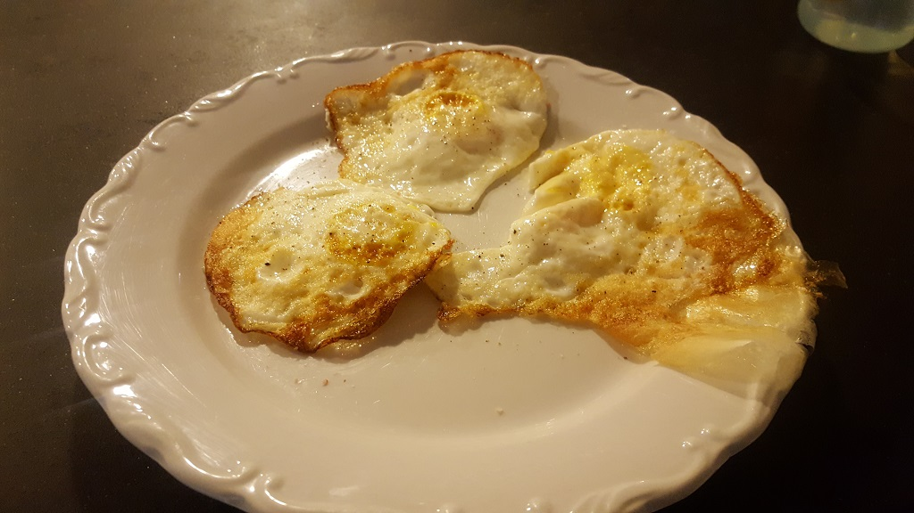

What I love about these are how easy it is to do. For example, scrambled eggs I have to monitor to make sure they don't overcook before flipping them. But these can just sit, freeing me to do other things like pack my lunch or make my coffee.
Preparation
Get out the frying pan and turn it on to medium high.
Steps
Put avocado oil in the pan. Olive oil tastes gross and MCT oil has too low a smoke point. Refined coconut oil would be fine. Butter will turn your eggs brown and the brown stuff is probably doing something bad to your body that will kill you later.
Crack three eggs in. Let them firm up. Don't pop the yolks, that's the best part! Flip as soon as constitutionally ready. Let sear another minute, then top with fresh cracked sea salt and pepper. I won't say "Enjoy," that's not a truly necessary step (though you will enjoy).
Back to Greatness